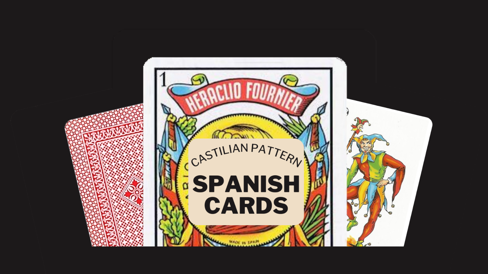
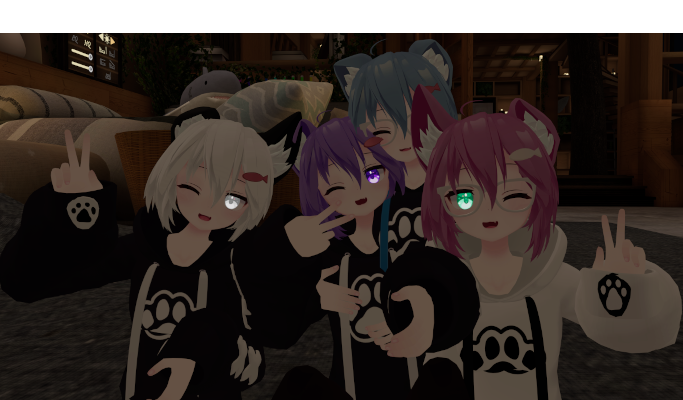
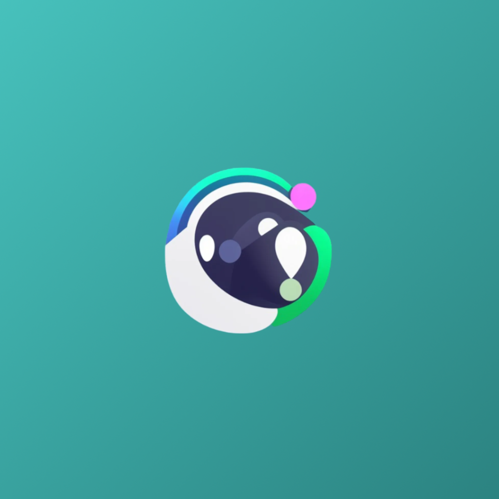

Proyectos Destacados
Explora algunos de los proyectos más destacados que he desarrollado.

Baraja española VRChat
Mundo para jugar a la baraja española en VRChat
31/7/2024 - Actualmente

Rusky
Un avatar hecho para VRChat.
10/04/2023 - ⏸️ 25/07/2024

Azirax
Bot de Discord multifunción en español
29/08/2020 - ⏸️ 03/08/2024